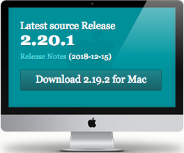

banner
Column 1
About
Documentation
Downloads
GUI Clients
Logos
Community
Column
Column
Download

GUI Clients
Git comes with built-in GUI tools (git-gui, gitk), but there are several third-party tools for users looking for a platform-specific experience.Logos
Various Git logos in PNG (bitmap) and EPS (vector) formats are available for use in online and print projects.Git via Git
If you already have Git installed, you can get the latest development version via Git itself: git cloneColumn